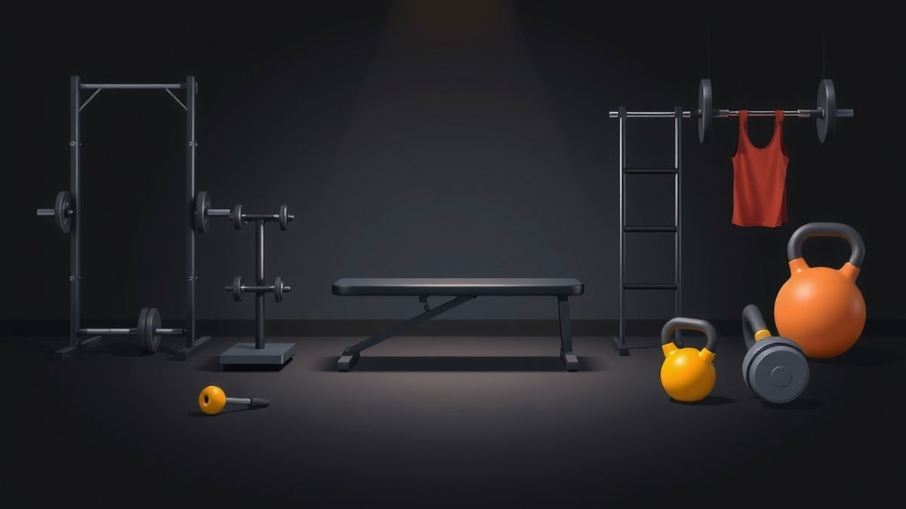
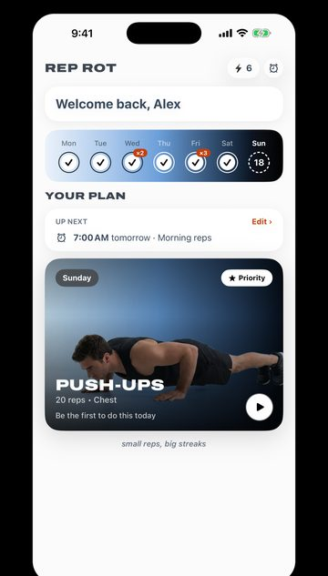

How to Stay Consistent With Working Out: Adjust, Don't Miss
Two lifters, two rules for staying consistent with working out: get good at one thing at a time, and on bad days make it easier instead of skipping.

TL;DR
- Focus on one movement at a time instead of trying to improve everything at once.
- On bad days, make the workout easier instead of skipping it.
- Habit research suggests one missed day doesn't matter much, but a pattern of misses does.
- Light movement often eases muscle soreness; sharp or joint pain means stop and get it checked.
- Set a daily minimum small enough to do on your worst day.
You started strong in January. New program, five days a week, everything at once: chest, back, legs, cardio, a stretching routine you found at 1 a.m.
By week three you were sore everywhere and good at nothing. Then you got a cold, missed four days, and the whole thing quietly ended.
Rep Rot was partly inspired by two creators who each figured out a piece of this. Neither one is about a better program. They're about how to stay consistent with working out long enough for any program to work.
Rule 1: Get good at one thing at a time
Jack Wiltshire (@sober.fitness) posted a Reel about what Jack would do if starting to lift again. Getting where Jack is today took more than two years, because there was no plan. The streamlined version is simple: spend about three months on each basic movement before moving on.
- Squats (lower-body push)
- Dips (simple upper-body push)
- Bench press (big upper-body push)
- Overhead press (overhead push)
- Barbell rows (upper-body pull)
- Pull-ups (overhead pull)
- Deadlifts or RDLs (lower-body pull)
Seven exercises, 21 months. Only then do they get combined into a classic push/pull/legs split. What Jack wouldn't do is the thing most of us try first: "trying to make progress in all areas simultaneously without real skill in anything," which leads, in Jack's words, to "little or no progress in all areas, as opposed to good results in one area at a time."

You don't have to copy the exact plan, or own a barbell, to use the idea. The point is focus. One movement gets your attention, your practice and your progress, and you can actually see yourself getting better at it. Seeing progress is one of the best reasons to keep going.
The bodyweight version
At home with no equipment, the same idea looks like this. Pick one movement for a month or two and practice it most days:
| Pattern | Start with | Easier version |
|---|---|---|
| Lower-body push | Bodyweight squats | Squat to a chair |
| Upper-body push | Push-ups | Hands on a counter or bench |
| Core | Plank | Knees down |
| Overhead pull | Pull-ups | Dead hangs or slow lowering from the top |
Get noticeably better at one, then add the next. Your old movements don't disappear; they just stop being the focus.

Rule 2: On bad days, adjust. Don't miss.
Skye Mackintosh (@dailyrepsguy, "The 20 Minute Guy") has a running experiment: can you get jacked in under 20 minutes a day? This Reel is day 429. The workout is lunges every minute on the minute for 20 minutes, using a 1–10 method from @kacecalisthenics: five lunges each leg, rest for the rest of the minute, repeat 20 times.
Skye's legs were already wrecked from a hard session a few days earlier. The workout happened anyway, along with an answer to a question Skye gets a lot: what do you do when you're sick, sore or injured? The answer, roughly: do what you can. It's okay to adjust and make it easier. But don't miss.
That rule fixes the most common way people quit. You don't usually stop because you decided to stop. You stop because one bad day turns into two, and two turns into "I'll start again Monday."
What the research says about missing
A study from University College London, published in 2010, followed 96 people building a new daily health habit for 12 weeks. On average it took 66 days for the behavior to feel automatic, with a huge range between people (18 days to a predicted 254).
The useful part for bad days: missing a single opportunity didn't meaningfully set people back. But people who were very inconsistent didn't form the habit at all. In other words, one missed day isn't the problem. The problem is when a miss becomes a pattern. "Adjust, don't miss" keeps the pattern intact.
Sore isn't the same as injured
Skye noticed that moving those sore legs actually loosened them up. That matches the research: a 2003 review of delayed-onset muscle soreness (the ache a day or two after a hard workout) found that exercise was the most effective way to relieve the pain, though the relief is temporary.
Be careful with this, though:
- Sore (a dull, general ache in muscles you worked): light movement is usually fine and often helps. Go easier.
- Sick: if it's mild, a walk or a few easy reps can count. If you have a fever or feel genuinely unwell, rest is the adjustment.
- Injured (sharp pain, pain in a joint, swelling, pain that changes how you move): don't train through it. Work around it, or see a doctor or physical therapist.
"Adjust" means picking the smallest useful version of today's work, not pretending you're fine.
Putting both rules together
Here's a simple plan that uses both ideas:
- Pick one movement for the next 4–8 weeks. Squats or push-ups are good starts.
- Set a daily minimum you could do on your worst day: 10 reps, or 20 seconds of a plank.
- On good days, do more: extra sets, or a session like Skye's 20-minute EMOM.
- On bad days, do the minimum, or an easier version. Count it.
- When the movement feels easy, make it harder or add the next one.
The minimum is the part that makes it work. It's small enough that "I don't have time" and "I'm too sore" stop being true.
Why this is how Rep Rot works
These two ideas are a big part of why we built Rep Rot. You pick one exercise and a small number of reps, and the app asks for that set every day: when your alarm goes off, or when you hit your limit on an app. A small daily minimum, tied to things you already do, so it's hard to miss.

And if you want to go further, follow the two people who got us thinking about it. Jack's plan is for building real strength over years. Skye's 20-minute days are proof you can stay consistent for a very long time. Go stack some wins.
Sources: Jack Wiltshire, @sober.fitness Reel; Skye Mackintosh, @dailyrepsguy Reel (day 429); Lally P et al., "How are habits formed: Modelling habit formation in the real world," European Journal of Social Psychology (2010), summarized by the British Psychological Society Research Digest; Cheung K, Hume P, Maxwell L, "Delayed onset muscle soreness: treatment strategies and performance factors", Sports Medicine (2003).